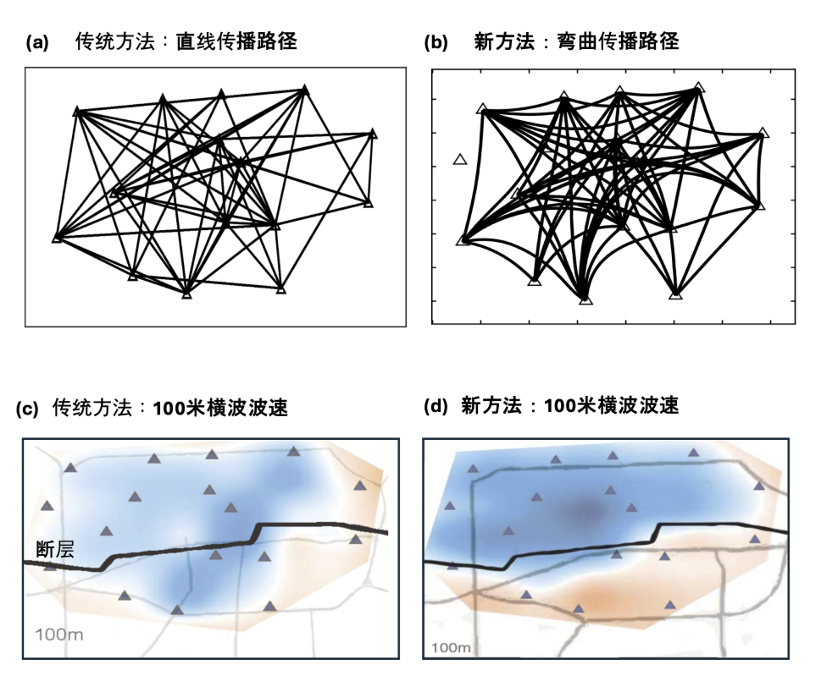

PARSIMONS:Passive And Reliable Seismic Imaging and Monitoring Of the Near Surface
近地表结构被动源地震成像及监测
特色:被动源、经济、可靠、环保
Parsimony

PARSIMONS:Passive And Reliable Seismic Imaging and Monitoring Of the Near Surface近地表结构被动源地震成像及监测特色:被动源、经济、可靠、环保 Parsimony
|
|
| 主页 |
成员 |
研究方向 |
成果介绍 |
野外活动 |
联系我们 |
|
1）背景噪声成像方法研究
 发展基于射线追踪的面波数据直接反演方法，该方法可以考虑短周期面波的非大圆路径传播效应， 可获得更加可靠的剪切波波速结构模型(Fang et al.,2015)。 2）密集台阵面波成像在盆地、成矿带、断裂带等区域的应用 面波直接反演方法已在不同尺度结构成像中获得广泛应用，如在南岭成矿带的应用中发现凡口矿 周缘6公里以下深度存在高速异常体（Vs>3.6km/s)，推测为基性侵入岩体 (Li, Fang et al., 2023)。 3）密集台阵接收函数成像在成矿带、断裂带等区域的应用 密集台阵接收函数成像显示成矿带、断裂的莫霍面及壳内间断面结构，为研究成矿背景及区域 构造演化提供证据(Bi, Fang et al., 2024)。 4）利用背景噪声监测地下结构变化 基于背景噪声监测区域速度结构变化(Luo, Fang et al., in prep)。 5）体波面波联合反演  基于体波面波数据互补性的联合反演方法及其在美国南加州地区的应用（Fang et al., 2016)。 6）基于泰森多边形参数化的成像方法 泰森多边形参数化可避免传统成像方法中阻尼及平滑规则项的选取，可以在任意区域根据数据约束加密， 获得更稳定的模型。 |